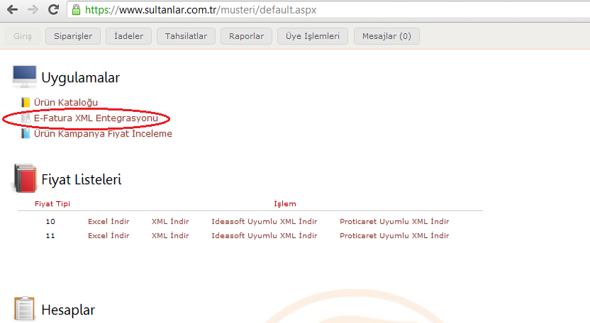
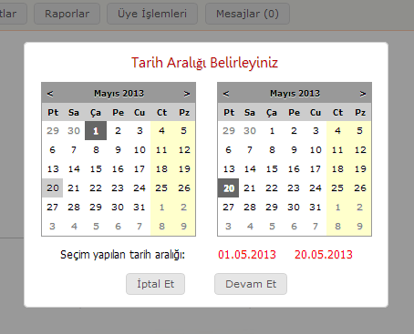
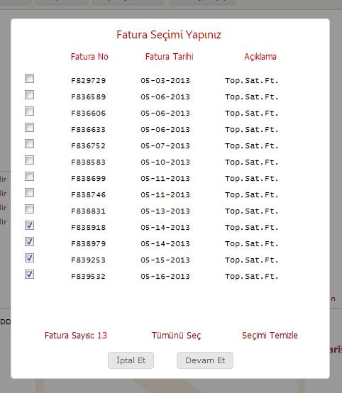
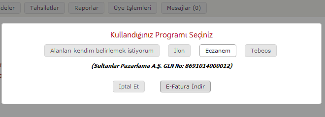
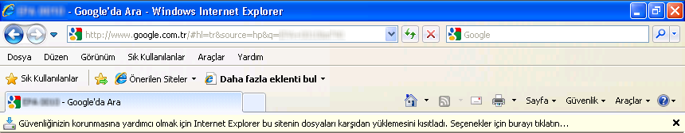

E-Fatura Aktarımı
* Aşağıda anlatılan işlemleri yapabilmek için sisteme giriş yapmanız gerekmektedir. Giriş yapabilmeniz için üyelik kaydınız olması gereklidir. Henüz üyelik kaydınız yok ise
Müşteri Girişi
ekranından
Yeni üye kaydı
tuşuyla üyelik açabilirsiniz.
Erişim Bağlantısı

www.sultanlar.com.tr
sayfasından
Müşteri Girişi
bölümünden
oturum
açtığınızda, karşınıza gelen
Giriş
ekranında E-Fatura erişim bağlantısını sol üst kısımda
E-Fatura XML Entegrasyonu
isminde görebilirsiniz. Linke tıkladığınızda tarih aralığı seçmeniz için aşağıdaki ekran karşınıza gelecektir.
Tarih Aralığı

Entegre etmek istediğiniz faturaların seçimini yapabilmek için tarih aralığı belirlemeniz gerekmektedir. Bu ekran açıldığında varsayılan olarak senenin ilk günü ve bugün seçili gelmektedir. Sol taraf tarih başlangıcını, sağ taraf ise tarih bitişini seçmeye imkan tanır. Seçim yaptıktan sonra
Devam Et
tuşuna basarak bir sonraki ekrana geçebilirsiniz.
Fatura Seçimi

Aktarmak istediğiniz faturaların tümünü seçmek için
Tümünü Seç
tuşuna basabilirsiniz. Faturaların hepsini seçimsiz hale getirmek için
Seçimi Temizle
tuşuna basabilirsiniz.
Uygulama Seçimi

Kullandığınız uygulama ekranda gözükmüyorsa,
Alan adlarını kendim belirlemek istiyorum
seçeneğini seçip alan adlarını kullandığınız programa göre düzenleyebilirsiniz. Getirilmesini istemediğiniz kolonların alan adlarını boş bırakırsanız aktarım modülüne getirilmeyecektir. Kullandığınız uygulama ekranda gözüküyorsa ilgili seçeneği işaretleyip aktarım modülünün seçilen programa göre otomatik düzenlenmesini sağlayabilirsiniz. Son olarak
E-Fatura İndir
tuşuna bastığınızda, programınıza uygun formatta hazırlanan dosyayı indirebilmeniz için aşağıdaki ekrandaki gibi kaydetme bölümü açılacaktır.
Bu örnekte Internet Explorer 9 kullanılmıştır. Farkı tarayıcılarda farklı indirme görünümü olabilir. Dosyayı kaydetmek için kaydet tuşuna basıp (örneğin masaüstüne yada) belirlediğiniz herhangi bir yere dosyayı kaydedebilirsiniz. Fatura aktarımını tamamlamak için kaydettiğiniz bu dosyayı, kullandığınız uygulamanın
E-Fatura
bölümünde seçip işlemi başlatmanız gerekmektedir.
Uyarı

Eğer böyle bir uyarı ile karşılaşırsanız,
Seçenekler için burayı tıklatın
kısmına tıklayıp
Karşıdan yüklemeye izin ver
seçeneğini seçiniz. Bu işlemi yaptıktan sonra fatura aktarımını tekrar yapmanız gerekmektedir.
Yardım sayfasına geri dön
Copyright © 2011-2019 Sultanlar Pazarlama A.Ş. Tüm hakları saklıdır.
Sitede yer alan resim, yazı ve içerikler kaynak gösterilerek dahi olsa kopyalanamaz.